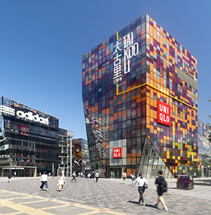
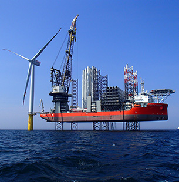
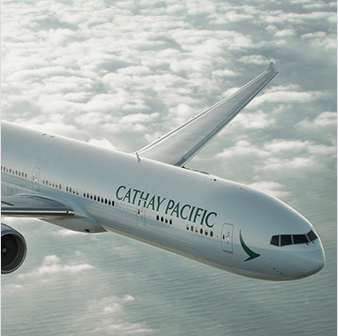
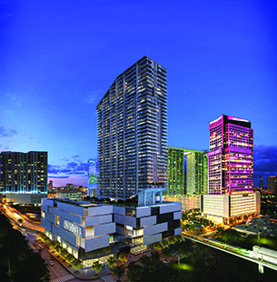

地产
太古地产于一九七二年成立，时值太古炼糖厂结业，腾出港岛东部一幅面积庞大的土地。该公司现为香港和中国内地领先的综合物业发展商、业主及营运商，尤其专注发展商业项目，在活化市区环境以创造长远价值方面，往绩卓著。该公司的业务包括三个主要范畴：物业投资、物业买卖及酒店投资。
太古地产自一九八零年起在美国佛罗里达州迈阿密市开展业务，成果显著。该公司目前正于当地的 Brickell 金融区发展大型综合项目 Brickell City Centre。
太古酒店拥有及管理一系列位于香港、中国内地及美国的酒店。
海洋
太古轮船公司是英国太古集团有限公司全资拥有的远洋航运公司。该公司总部设于新加坡，在澳洲、新西兰、香港、印度、巴布亚新畿内亚、美国及英国设有代表办事处。该公司透过旗下三个业务部门 Swire Shipping、Swire Bulk 及 Swire Bulk Logistics运营一个覆盖全球的航运网络，提供多用途班轮、干散货及散货物流服务。
此外，Swire Bulk Logistics 将于二零一六年最后一季接收一艘载重九千吨的水泥船。太古轮船公司的多用途船队用以营运旗下 Swire Shipping 的班轮航运业务，而二十八艘灵便型散货船将悉数用以营运太古轮船公司干散货部门 Swire Bulk 的业务。除调派至主要营运部门的船只外，太古轮船公司亦透过其于 Mandarin Shipping Limited 所持有的股权，持有两艘二千一百个标准箱的货柜船及六艘一千七百个标准箱的新造货柜船的权益。
航空
太古旗下的国泰航空公司是香港的旗舰航空公司，更是全球顶尖的国际航空公司。该公司经营其中一支最现代化的机队，以产品优越、服务超卓见称。
国泰航空于一九四六年在香港成立，一直以港为家，并进行庞大投资，致力发展香港成为一个主要的国际航运枢纽。
国泰航空是「寰宇一家」环球联盟的成员，各成员结合起来的航线网络遍布全球超过一千个航点。国泰航空更是亚洲首屈一指的旅游奖励计划「亚洲万里通」的成员。
公开上市的香港飞机工程公司是全球主要的独立飞机工程集团之一。国泰航空饮食服务公司是香港的主要航空饮食设施，并于菲律宾、台湾及加拿大营运航空饮食设施。
最新消息
- 2016年06月16日 - 国泰集团公布2016年5月份客、货运量数据
- 2016年06月07日 - 庆祝进入中国一百五十周年；太古集团携手上海三联书店于北京发布新书 — 解读太古管理之道
- 2016年05月30日 - 国泰航空首架空中巴士A350客机抵港
- 2016年05月25日- Swire Blue Ocean A/S Signs Contract with Siemens for Beatrice Offshore Windfarm Ltd (BOWL) Project
- 2016年05月17日 - 国泰集团公布2016年4月份客、货运量数据
- 2016年05月13日 - 庆祝进入中国一百五十周年；太古集团携手上海三联书店发布新书
- 2016年04月20日 - 美国太古可口可乐与可口可乐公司签订最终协议；取得新墨西哥州阿尔伯克基市专营区域